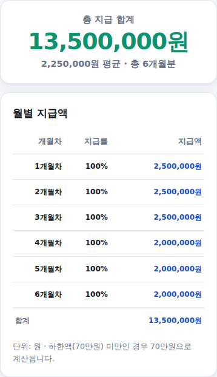

육아휴직을 앞두고 있다면 매달 얼마씩 받는지, 전체 기간 동안 총 얼마를 받는지가 가장 궁금하실 겁니다. 육아휴직급여 계산기는 육아휴직 형태, 통상임금, 휴직 기간만 넣으면 월별 지급액과 총 합계를 한 번에 계산해드립니다. 쓰는 법은 아래와 같습니다.
-
육아휴직 형태 선택
일반 육아휴직과 6+6 부모육아휴직 중 해당하는 형태를 골라주세요. 자녀가 생후 18개월 이내이고 부모가 함께(동시 또는 순차) 육아휴직을 사용한다면 6+6 부모육아휴직제가 적용되고, 그렇지 않으면 일반 육아휴직급여가 적용됩니다.
육아휴직 형태 선택 화면
-
통상임금·휴직 기간 입력
통상임금은 보통 세전 월급여와 비슷합니다. 정확한 통상임금은 급여명세서나 회사 담당자에게 확인해보세요. 빠른 금액 버튼을 눌러도 되고 직접 입력해도 됩니다. 이어서 육아휴직 기간(개월)도 같은 방식으로 넣어주세요.
통상임금·기간 입력 화면
-
결과 확인 — 총 합계·월별 지급액
맨 위에 총 지급 합계가 크게 나오고, 아래 표에서 개월차별 지급률과 지급액을 확인할 수 있습니다. 6+6 부모육아휴직제를 선택했다면 7개월차부터는 자동으로 일반 육아휴직급여 규정으로 전환되어 계산됩니다.

결과 화면
월별 지급액은 어떻게 정해지나요
일반 육아휴직급여는 1~3개월차 통상임금의 100%(상한 250만원), 4~6개월차 100%(상한 200만원), 7개월차부터 80%(상한 160만원)이며, 전 구간에 하한액 70만원이 적용됩니다.
6+6 부모육아휴직제는 첫 6개월 동안 통상임금 100%를 상한액 계단식 인상(1~2개월 250만원, 3개월 300만원, 4개월 350만원, 5개월 400만원, 6개월 450만원)으로 받고, 7개월차부터는 일반 육아휴직급여 규정으로 전환됩니다.
2025년 개편 — 사후지급금 폐지
2025년 1월 1일 이후 육아휴직을 시작한 경우부터는 사후지급금 제도가 폐지되어, 복직 후 6개월 근무라는 조건 없이 휴직 기간 중 매달 급여 전액을 받습니다. 이 계산기는 이 개편 내용을 기준으로 계산합니다.
계산은 참고용입니다. 기준: 2025.1.1. 이후 육아휴직 개시자부터 적용된 사후지급금 폐지 개편, 2026년 기준 정리.